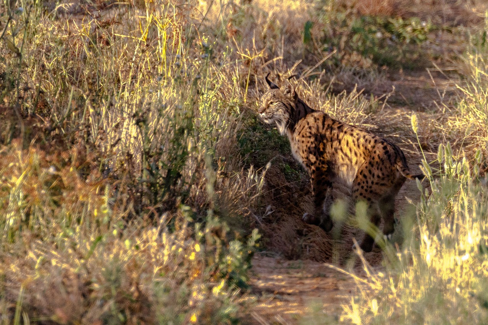
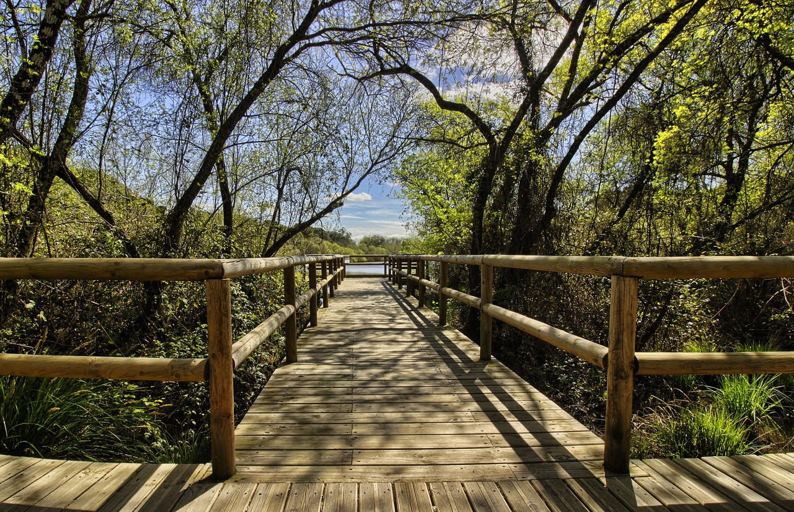

CONSTRUYENDO NUESTRA SDA

En el siguiente enlace, incluimos una breve presentación de la SDA 3 que lleva por título SALVAR DOÑANA. Te pedimos que, en grupo cooperativo, leas y realices las reflexiones y aportaciones que se indican en dicho enlace. Deberás anotar todas las ideas en tu cuaderno para después ponerlas en común en gran grupo. ¡Ánimo! ¡Tu voz importa!
https://view.genially.com/675c6a9ef5a278d69ee98c64/guide-exe-learning-sda-4-salvar-donana
TEMPORALIZANDO LAS TAREAS

A continuación, os dejamos un enlace que os llevará a una temporalización de algunas de las tareas que deberéis llevar a cabo a lo largo de esta SDA y que están principalmente vinculadas al área de Conocimiento del Medio. Os pedimos que, en grupos cooperativos, analicéis dichas tareas y evaluéis su grado de dificultad. Asimismo, sería interesante que realizarais una o dos propuestas por grupo para mejorar las tareas.
¡Gracias por vuestra participación!
https://www.tiki-toki.com/timeline/entry/2128780/OPERACIN-DOANA/